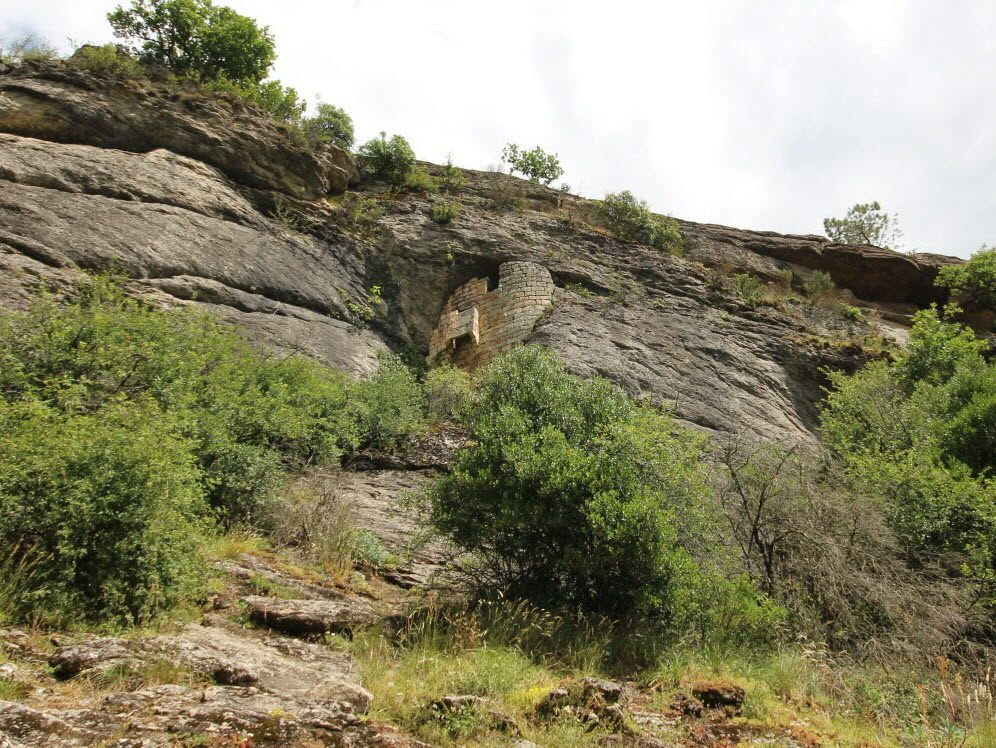

No need for a car for this outing: Fort Mahon is one of the stone hamlets of Flaviac, the very village where Les Cabritas is located. A hike can start right from the cottage, through the old hamlets of the commune to the mysterious fortified caves of the Jaubernie, over towards Coux.

Fort Mahon, a stone hamlet at the heart of Flaviac
Flaviac, nestled in the Ouvèze valley, is made up of several characterful hamlets, including Fort Mahon, alongside Léouze, the Château Saint-Quentin and the hamlet of Cheylus. The hiking trails through these old stone hamlets offer lovely views over the Rhône valley, the Coiron summits and, on a clear day, as far as the Alps.
The Jaubernie caves, a fortified refuge in the cliff
A little further on, high above the commune of Coux, lie the Jaubernie caves: former natural cavities turned into fortified semi-troglodyte dwellings, notably developed in the late 16th and early 17th centuries, during and after the 1629 Siege of Privas. Of the eight caves on the site, four cling to the cliff face and still stand out today for their architecture blending shelter and defence.
Good to know before you go
This hike can be done as a loop from the cottage or from a car park near Coux, with a moderate elevation gain. Good walking shoes are recommended. As the caves are now private property, they're viewed from the trail without entering. It's an ideal morning outing, easily paired in the afternoon with a visit to Privas, just a few minutes away.
Practical info from Les Cabritas
- Distance from Flaviac: can start on foot from the cottage
- Best time to go: spring and autumn, or early morning in summer
- Great for: local hiking, heritage, car-free outings
Fancy discovering Fort Mahon and the Jaubernie caves from your cottage in Ardèche?
Les Cabritas welcomes you in Flaviac, at the heart of Ardèche, for a comfortable stay with a private pool, just a stone's throw from the region's most beautiful sites.
Check availability